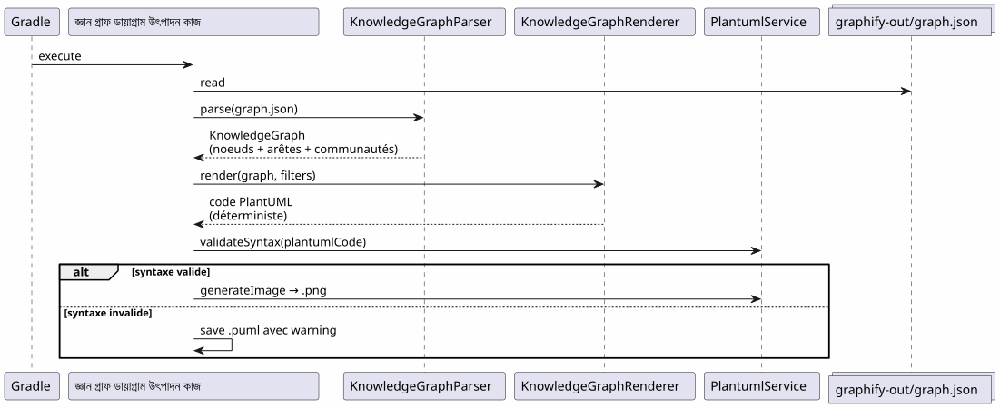
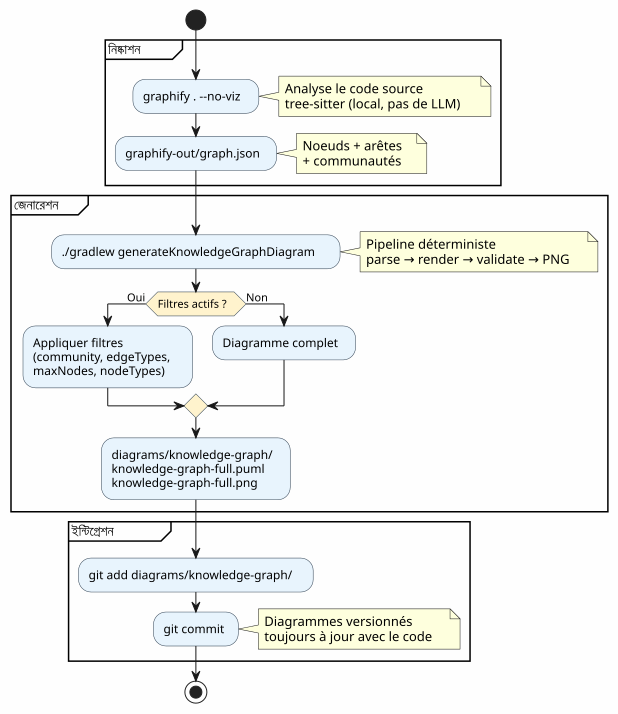
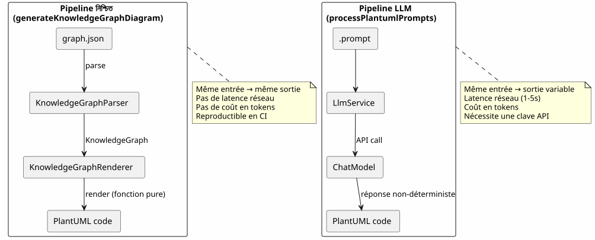
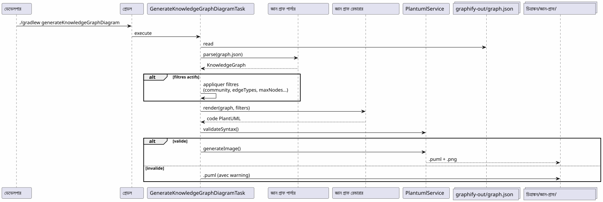

Graphify-কে Gradle ওয়ার্কফ্লোএ ইন্টিগ্রেট করা : Knowledge Graph থেকে PlantUML ডায়াগ্রামে এক কমান্ডে
Publié le 19 April 2026
- সমস্যা : ডায়াগ্রামগুলো কোডের পিছনে পড়েছে
- সমাধান : একটি পাইপলাইন নিয়মিত জ্ঞান গ্রাফ → PlantUML
- ধাপ ১ : Graphify ইনস্টল করুন এবং Knowledge Graph বের করুন
- ধাপ 2 : Gradle প্লাগইন Knowledge Graph কে PlantUML-এ রূপান্তর করা হয়
- ধাপ ৩ : দৈনন্দিন ব্যবহার
- গ্রেডেল ওয়ার্কফ্লোতে সম্পূর্ণ পাইপলাইন
- ডগফুডিং: প্লাগইনটি নিজেই ডকুমেন্টেশন করে
- কেন এটি নির্ধারক (এবং কেন তা গুরুত্বপূর্ণ)
- পাইপলাইন নিজের ডায়াগ্রামগুলো
- প্রজেক্ট গবর্নেন্সে ইন্টিগ্রেশন
- সেটআপ : ৫ মিনিটে চেকলিস্ট
- �ঝুঁকি এবং নিরাময়
- শেষে যা পাওয়া যায়
- লিঙ্ক_groups
আপনার কোডবেস বাড়ছে। মডিউলের মধ্যে নির্ভরতাগুলি গুণগুণে বাড়ছে। আর্কিটেকচার ডকুমেন্টেশন লিখতেই পুরনো হয়ে যায়। আপনার Gradle বিল্ড যদি স্বয়ংক্রিয়ভাবে আসল কোডের গঠন থেকে আপ-টু-ডেট ডায়াগ্রাম তৈরি করতে পারত, কিভাবে হতো? ঠিক এটাই Graphify + PlantUML Gradle Plugin পাইপলাইনটি করে।graphify . --no-viz`Knowledge Graph নিষ্কাশন করে,./gradlew generateKnowledgeGraphDiagram`এটিকে PlantUML ডায়াগ্রামে রূপান্তর করে। শূন্য LLM, শূন্য ম্যানুয়াল, ১০০% নির্ধারিত।
- টিক
-
[]
সমস্যা : ডায়াগ্রামগুলো কোডের পিছনে পড়েছে
কয়েক হাজার লাইনের বেশি যেকোনো প্রজেক্ট এই সিনড্রোমকে জানে :
-
প্রজেক্টের শুরুতে আমরা একটি আর্কিটেকচার ডায়াগ্রাম আঁকে
-
কোড বদলে যাচ্ছে, নির্ভরতাগুলি পরিবর্তিত হচ্ছে
-
চিত্র একটি সাজসুসজ্জিত মিথ্যা হয়ে উঠে
-
কেউ এটি আপডেট করে না কারণ এটি বিরক্তিকর
-
নতুন আসন্নরা সেই উপর নির্ভর করে এবং ভুল করে

প্রশ্নটি হল না কি আমাদের ডায়াগ্রাম দরকার? — সবাই জানে যে হ্যাঁ। প্রশ্নটি হল :কে他们的 আপ-টু-ডেট রাখে?
উত্তর: কেউ না। যদি না তা স্বয়ংক্রিয় হয়।
সমাধান : একটি পাইপলাইন নিয়মিত জ্ঞান গ্রাফ → PlantUML
নিয়মটি সহজ: হাতে চিত্র আঁকে না, আমরা সেগুলোকোডের বাস্তব কাঠামো থেকে তৈরি হয়.
Failed to generate image: PlantUML preprocessing failed: [From <input> (line 8) ] @startuml skinparam backgroundColor #FEFEFE skinparam componentStyle rectangle actor Développeur component "Graphify\n(pip install graphifyy)" as Graphify collections "graphify-out/graph.json\n(জ্ঞান গ্রাফ)" as KGJSON component "PlantUML Gradle প্লাগইন ^^^^^ Syntax Error? (Assumed diagram type: component) @startuml skinparam backgroundColor #FEFEFE skinparam componentStyle rectangle actor Développeur component "Graphify\n(pip install graphifyy)" as Graphify collections "graphify-out/graph.json\n(জ্ঞান গ্রাফ)" as KGJSON component "PlantUML Gradle প্লাগইন (generateKnowledgeGraphDiagram)" as Plugin component "KnowledgeGraphParser" as Parser component "জ্ঞান গ্রাফ রেন্ডারার" as Renderer component "PlantumlService (যাচাই + PNG রেন্ডার)" as PS collections "আরেখ/জ্ঞান-গ্রাফ/\n(.puml + .png)" as Output Développeur --> Graphify : graphify . --no-viz Graphify --> KGJSON : extrait la structure\ndu code source Développeur --> Plugin : ./gradlew generateKnowledgeGraphDiagram Plugin --> Parser : parse(graph.json) Parser --> Plugin : KnowledgeGraph\n(noeuds + arêtes + communautés) Plugin --> Renderer : render(graph, filters) Renderer --> Plugin : code PlantUML\ndéterministe Plugin --> PS : validateSyntax + generateImage PS --> Output : .puml + .png note bottom of Plugin Pipeline DÉTERMINISTE Aucun appel LLM Résultat reproductible end note @enduml
দুটি কমান্ড। এটাই সব।
# Étape 1 : extraire le Knowledge Graph
graphify . --no-viz
# Étape 2 : générer les diagrammes PlantUML
./gradlew generateKnowledgeGraphDiagramফলাফল? কিছু ফাইল`.puml` et .png`মধে`diagrams/knowledge-graph/, ভার্সনকৃত Git-এ, সবsomয় কোডের সাথে আপ-টু-ডেট
ধাপ ১ : Graphify ইনস্টল করুন এবং Knowledge Graph বের করুন
ইনস্টলেশন
Graphify একটি পাইথন সরঞ্জাম যা আপনার কোডবেস বিশ্লেষণ করে এবং গঠিত জ্ঞান গ্রাফ তৈরি করে:
# Méthode recommandée
uv tool install graphifyy && graphify install --platform opencode
# Alternative avec pip
pip install graphifyy && graphify install --platform opencodeবাতিলকরণগুলি কনফিগার করুন
একটি ফাইল তৈরি করুন`.graphifyignore`প্রকল্পের রুটে, ব্যবসায়িক লজিকের অংশ নয় এমন ফাইলগুলো বাদ দেওয়ার জন্য :
# Secrets — JAMAIS dans le graphe
*-context.yml
*.env
# Fichiers générés
build/
.gradle/
# Tests fonctionnels
src/functionalTest/Knowledge Graph বের করুন
graphify . --no-vizflagটি`--no-viz`HTML তৈরির প্রক্রিয়া অতিক্রম করে (Gradle পাইপলে অপ্রয়োজনীয়)। ফলাফলটি একটি ফাইল।`graphify-out/graph.json`শামিল :
-
বন্ধন: শ্রেণী, ফাংশন, ফাইল — তাদের ধরন ও সম্প্রদায়
-
কিনার: নোডের মধ্যে সম্পর্ক (EXTRACTED কোড থেকে, INFERRED LLM দ্বারা)
-
সম্প্রদায়: সংযুক্ত নোডের অটোম্যাটিক গোষ্ঠীসমূহ
{
"nodes": [
{"id": "0", "label": "LlmService", "file_type": "code", "community": 0},
{"id": "1", "label": "ApiKeyPool", "file_type": "code", "community": 0},
{"id": "2", "label": "PlantumlService", "file_type": "code", "community": 1}
],
"links": [
{"source": "1", "target": "0", "relation": "uses", "confidence": "EXTRACTED", "weight": 0.9},
{"source": "0", "target": "2", "relation": "calls", "confidence": "INFERRED", "weight": 0.7}
]
}|
সোর্স কোড ( |
ধাপ 2 : Gradle প্লাগইন Knowledge Graph কে PlantUML-এ রূপান্তর করা হয়
পাইপলাইন আর্কিটেকচার
প্লাগইন`com.cheroliv.plantuml`একটি কাজ অন্তর্ভুক্ত করে`generateKnowledgeGraphDiagram`যে রূপান্তর করে`graph.json`PlantUML ডায়াগ্রামে একটি পদ্ধতির মাধ্যমেপুরোপুরি নিয়মনুসার:

অভ্যন্তরীণ উপকরণ
| উপকরণ | ভূমিকা |
|---|---|
|
বিশ্লেষণ`graph.json`— সমর্থন করে ৩ ফরম্যাট : নেটিভ ग्राफिइ ( |
|
নির্ধারিতভাবে একটিকে রূপান্তরিত করে`KnowledgeGraph`PlantUML কোডে। প্রকার অনুযায়ী গোষ্ঠী, প্যাকেজে কমিউনিটি, স্বয়ংক্রিয় লেজেন্ড |
|
Gradle কাজ যা parse → render → validate → PNG কে সমন্বয় করে। Gradle বৈশিষ্ট্য ব্যবহার করে কনফিগারযোগ্য। |
|
ডেটা মডেল :`KnowledgeGraph`, |
|
সিনট্যাক্স যাচাই + পিঁজি রেন্ডার (প্লাগিনের সব কাজে পুনরায় ব্যবহার করা হয়). |
রেন্ডারিং নিয়ম
রেন্ডারার নিশ্চিত দৃশ্য সম্মতিসম্মিলন প্রয়োগ করে:
| এজের ধরণ | নোটেশন PlantUML | অর্থ |
|---|---|---|
নিষ্কাশিত |
|
উৎস কোড থেকে বের করা সম্পর্ক (নিশ্চয়তা) |
অনুমানিত |
|
LLM দ্বারা অনুমানিত সম্পর্ক (বিশ্বাসের স্কোর) |
অস্পষ্ট |
|
অস্পষ্ট সম্পর্ক (যাচাই করতে হয়) |
কমিউনিটি[] প্ল্যান্টিUML প্যাকেজের মতো রেন্ডার করা হয়, স্বয়ংক্রিয় রঙের প্যালেটের সাথে।
ধাপ ৩ : দৈনন্দিন ব্যবহার
সম্পূর্ণ ডায়াগ্রাম
# Générer le diagramme du Knowledge Graph complet
./gradlew generateKnowledgeGraphDiagramআউটপুট :`diagrams/knowledge-graph/knowledge-graph-full.puml`+.png
সম্প্রদায় অনুযায়ী ফিল্টার করুন
# Une seule communauté
./gradlew generateKnowledgeGraphDiagram \
-Pplantuml.kg.community=community_0
# Limiter le nombre de noeuds (lisibilité)
./gradlew generateKnowledgeGraphDiagram \
-Pplantuml.kg.community=community_0 \
-Pplantuml.kg.maxNodes=15এজের ধরন অনুযায়ী ফিল্টার
# Uniquement les relations certaines (EXTRACTED)
./gradlew generateKnowledgeGraphDiagram \
-Pplantuml.kg.edgeTypes=EXTRACTED
# Relations certaines + inférées
./gradlew generateKnowledgeGraphDiagram \
-Pplantuml.kg.edgeTypes=EXTRACTED,INFERREDনোডের ধরন এবং বিশ্বাস অনুযায়ী ফিল্টার করুন
# Uniquement les classes de code
./gradlew generateKnowledgeGraphDiagram \
-Pplantuml.kg.nodeTypes=code
# Seuil de confiance minimum (pour les INFERRED)
./gradlew generateKnowledgeGraphDiagram \
-Pplantuml.kg.minConfidence=0.7কাস্টম আউটপুট ডিরেক্টরি
./gradlew generateKnowledgeGraphDiagram \
-Pplantuml.kg.outputDir=docs/architectureবৈশিষ্ট্যের সম্পূর্ণ রেফারেন্স
| স্বত্ব | দোষ | বিবরণ |
|---|---|---|
|
(সকল) |
কমিউনিটি নাম অনুযায়ী ফিল্টার (উপস্ট্রিং মিল) |
|
(সব) |
কমা দিয়ে পৃথক করা किनार के প্রকার :`EXTRACTED`, |
|
|
এজের জন্য ন্যূনতম বিশ্বাস সীমা |
|
(অসীম) |
প্রদর্শনযোগ্য সর্বোচ্চ নোড সংখ্যা |
|
(সব) |
নোডের ধরন কমা দিয়ে বিভক্ত (উদাহরণ. |
|
|
ফাইলগুলির জন্য আউটপুট ডিরেক্টরি`.puml` et |
গ্রেডেল ওয়ার্কফ্লোতে সম্পূর্ণ পাইপলাইন
ওয়ার্কফ্লো প্রকার

বিকাশ চক্রে একীকরণ
পাইপলাইনটি প্রকৃতপক্ষে বিকাশের মূল ধাপগুলো স্বাভাবিকভাবে একত্রিত হয়:
Failed to generate image: PlantUML preprocessing failed: [From <input> (line 5) ] @startuml skinparam backgroundColor #FEFEFE state "উন্নয়ন" as dev state "নিষ্কাশন ^^^^^ Syntax Error? (Assumed diagram type: state) @startuml skinparam backgroundColor #FEFEFE state "উন্নয়ন" as dev state "নিষ্কাশন graphify . --no-viz" as extract state "উৎপাদন ./gradlew generateKnowledgeGraphDiagram" as generate state "Commit ভার্সনকৃত ডায়াগ্রাম" as commit [*] --> dev dev --> extract : Code modifié extract --> generate : graph.json à jour generate --> commit : .puml + .png générés commit --> dev : Diagrammes dans le repo note right of extract Quasi instantané sur du code Kotlin (tree-sitter, pas de LLM) end note note right of generate Déterministe Pas de LLM Résultat reproductible end note @enduml
প্র진ক্রমিক আপডেট
কোড পরিবর্তিত হলে, আমরা শূন্য থেকে পুরো গ্রাফটি পুনর্গঠন করি না :
# Mise à jour incrémentale (fichiers modifiés uniquement)
graphify . --update
# Puis régénérer les diagrammes
./gradlew generateKnowledgeGraphDiagram|
|
ডগফুডিং: প্লাগইনটি নিজেই ডকুমেন্টেশন করে
PlantUML প্লাগইনটি প্রম্পটকে ডায়াগ্রামে রূপান্তর করে। এটি স্বয়ং কোডবেসের নোলেজ গ্রাফকে ও ডকুমেন্টেশন ডায়াগ্রামে রূপান্তর করতে পারে। dogfooding : প্লাগইন তার নিজের সেবা ব্যবহার করে।
Failed to generate image: PlantUML preprocessing failed: [From <input> (line 6) ]
@startuml
skinparam backgroundColor #FEFEFE
skinparam componentStyle rectangle
package "সাধারণ পাইপলাইন
(ব্যবহারকারী → আকচিত্র)" as normal {
^^^^^
Syntax Error? (Assumed diagram type: activity)
@startuml
skinparam backgroundColor #FEFEFE
skinparam componentStyle rectangle
package "সাধারণ পাইপলাইন
(ব্যবহারকারী → আকচিত্র)" as normal {
[Fichier .prompt] as prompt
[LlmService\n+ ApiKeyPool] as llm1
[ProcessPlantumlPromptsTask] as task1
[Diagramme PNG] as out1
prompt --> task1
task1 --> llm1
llm1 --> out1
}
package "পাইপলাইন জ্ঞান গ্রাফ\n(নির্ধারক, LLM না)" as kg {
[graphify-out/graph.json] as kgjson
[KnowledgeGraphParser] as parser
[KnowledgeGraphRenderer] as renderer
[PlantumlService] as ps
[Diagramme PNG\n(documentation du plugin)] as out2
kgjson --> parser
parser --> renderer
renderer --> ps
ps --> out2
}
package "পাইপলাইন ডগফুডিং
(LLM → প্লাগইনের ডকুমেন্টেশন)" as dogfood {
[GraphifyPromptAdapter] as gpa
[Fichiers .prompt\nauto-générés] as auto_prompt
[LlmService\n+ ApiKeyPool] as llm2
[ProcessPlantumlPromptsTask] as task2
[Diagramme PNG\n(documentation LLM)] as out3
kgjson --> gpa
gpa --> auto_prompt
auto_prompt --> task2
task2 --> llm2
llm2 --> out3
}
note "একই LlmService, একই ApiKeyPool,
একই PlantumlService
— শূন্য ডুপ্লিকেশন" as N
@enduml
সংযুক্ত Gradle টাস্ক :
| কাজ | LLM ? | বর্ণনা |
|---|---|---|
|
না |
পরিবর্তন কর`graph.json`এ PlantUML (নির্ধারিত) |
|
হ্যাঁ |
কিছু তৈরি কর`.prompt`গ্রাফ থেকে, LLM ব্যবহার করে (dogfooding) তা প্রক্রিয়া করা হয়। |
# Documentation déterministe (rapide, pas de LLM)
./gradlew generateKnowledgeGraphDiagram
# Documentation LLM (plus riche, consomme des tokens)
./gradlew generateDiagramDocsকেন এটি নির্ধারক (এবং কেন তা গুরুত্বপূর্ণ)
পাইপলাইনের মূল পয়েন্ট`generateKnowledgeGraphDiagram` : এটা কোনো LLMকে ডাকে না. পরিবর্তন`graph.json`→ PlantUML একটি শুদ্ধ ফাংশন।

বাস্তবিক সুবিধা :
| সুবিধা | প্রভাব |
|---|---|
পুনরুত্পাদনযোগ্যতা |
একই`graph.json`→ একই نمودার। ঠিক আছে। প্রতিবার। |
শূন্য খরচ |
LLM কল না = tokens না = API বিল না. |
শূন্য বিলম্ব |
Parse + render নেমে ~100ms, 1-5 সেকেন্ড নয়। |
সামঞ্জস্যপূর্ণ CI |
কোন API কী প্রয়োজন নেই। ভেরিয়েবল LLM প্রতিক্রিয়ার কারণে কোন ফ্লাকি টেস্ট নেই। |
ভার্সনযোগ্য |
Le |
পাইপলাইন নিজের ডায়াগ্রামগুলো
লুপকে বন্ধ করতে, এখানে প্লাগইন দ্বারা তৈরি হওয়া পাইপলাইনের ডায়াগ্রাম দেওয়া হল:

প্রজেক্ট গবর্নেন্সে ইন্টিগ্রেশন
আমাদের প্রকল্পে, এই পাইপলাইনটি AI‑এজেন্টের জন্য EAGER/LAZY কনটেক্সট ম্যানেজমেন্ট কৌশলের অংশ। Knowledge Graph ম্যানুয়াল আর্কিটেকচার ডকুমেন্টেশনকে একটি স্ট্রাকচার্ড, কুয়েরিयोग্য এবং স্বয়ং আপডেটযোগ্য গ্রাফ দ্বারা প্রতিস্থাপন করে।
Failed to generate image: PlantUML preprocessing failed: [From <input> (line 11) ]
@startuml
skinparam backgroundColor #FEFEFE
skinparam componentStyle rectangle
package "EAGER\n(সempre চার্জিত)" as eager {
[PROMPT_REPRISE.adoc\n(contexte session)] as pr
[INDEX.adoc\n(vue d'ensemble)] as idx
[GRAPH_REPORT.adoc\n(~50 lignes)] as gr
}
package "LAZY — রণনীতি
^^^^^
Syntax Error? (Assumed diagram type: component)
@startuml
skinparam backgroundColor #FEFEFE
skinparam componentStyle rectangle
package "EAGER\n(সempre চার্জিত)" as eager {
[PROMPT_REPRISE.adoc\n(contexte session)] as pr
[INDEX.adoc\n(vue d'ensemble)] as idx
[GRAPH_REPORT.adoc\n(~50 lignes)] as gr
}
package "LAZY — রণনীতি
(অনুরোধে)" as lazy_strat {
[Méthodologies] as meth
[Archives sessions] as sessions
}
package "LAZY — Graphify
(লক্ষ্য-নির্ধারিত কুয়েরি)" as lazy_graph {
[graph.json] as gj
[Queries\n(query/path/explain)] as queries
}
package "Pipeline PlantUML
(স্বয়ং-উৎপন্ন)" as puml {
[generateKnowledgeGraphDiagram] as kgTask
[generateDiagramDocs] as ddTask
[Diagrammes PNG] as diagrams
}
Agent --> eager : Lit en début de session
Agent ..> lazy_strat : Charge si type détecté
Agent ..> lazy_graph : Query si besoin structurel
kgTask --> diagrams : Déterministe
ddTask --> diagrams : Via LLM
note right of gr
Condensé du Knowledge Graph
God nodes + communautés
Remplace ECOSYSTEM_OVERVIEW
(225 lignes → 50 lignes)
end note
@enduml
দুটি সিস্টেমের একত্রিত হওয়া সমন্বয়মূলক:
-
কৌশল কখন এবং কীভাবে— শাসন, কর্মপ্রবাহ, সংরক্ষণ
-
Graphify কী এবং কোথায় তা পরিচালনা করে— কোডের গঠন, সম্পর্ক, লক্ষ্য অনুসন্ধান
_ সেশন কৌশলটি পরিচালনা করেকখন et le কিভাবে(শাসন, workflow, সীমা), Graphify পরিচালনা করেকি? et le কোথায়(কোডের গঠন, সম্পর্ক, লক্ষ্য করা কোয়েরি)। PlantUML পাইপলাইনটি পরিচালনা করেকি দিয়ে?(নির্ধারিত ডায়াগ্রাম, সংস্করণবद्ध, সর্বদা আপ-টু-ডেট) _
সেটআপ : ৫ মিনিটে চেকলিস্ট
| # | ধাপ | অর্ডার |
|---|---|---|
1 |
Graphify ইনস্টল করুন |
|
2 |
অপব্যাহনগুলো কনফিগার করুন |
তৈরি`.graphifyignore` |
3 |
নলেজ গ্রাফ এক্সট্র্যাক্ট করা |
|
4 |
ডায়াগ্রামগুলো তৈরি করুন |
|
5 |
ফলাফলগুলোকে কমিট করুন |
|
# Script complet en 5 commandes
uv tool install graphifyy
cat > .graphifyignore << 'EOF'
*-context.yml
*.env
build/
.gradle/
EOF
graphify . --no-viz
./gradlew generateKnowledgeGraphDiagram
git add graphify-out/GRAPH_REPORT.adoc graphify-out/graph.json diagrams/knowledge-graph/�ঝুঁকি এবং নিরাময়
| ফাঁস | বর্ণনা | শমন |
|---|---|---|
অতidéষ্ট ঘন গ্রাফ |
একটি বড় প্রকল্প শতাঙ্করো অপঠনযোগ্য নোড তৈরি করে |
ব্য�্যবহার করা`-Pplantuml.kg.maxNodes=30`এবং সম্প্রদায় অনুযায়ী ফিল্টার করুন |
বর্জন অতি বিস্তritos |
বেশ বেশি ফাইল মধ্যে`.graphifyignore`গ্রাফের মান কমায় |
শুধুমাত্র credentials এবং build বাদ দিয়ে শুরু করুন |
তীরদের দিক |
किनার INFERRED অস্পষ্ট দিক হতে পারে |
ফিল্টার করুন`-Pplantuml.kg.edgeTypes=EXTRACTED`শুধুমাত্র নিশ্চিত সম্পর্কের জন্য |
অপ্রচলিত গ্রাফ |
কোড পরিবর্তিত হয় কিন্তু গ্রাফটি পুনর্নির্মিত হয় না |
ব্যবহার করা`graphify . --update`নিয়মিতভাবে অথবা গিট হুক`graphify hook install` |
আপডেট করা খরচ |
অবক্রমিত আপডেট প্রায়ে বিনামূল্য (tree-sitter local) |
শুধুমাত্র ডক্স ( |
শেষে যা পাওয়া যায়
Failed to generate image: PlantUML preprocessing failed: [From <input> (line 10) ]
@startuml
skinparam backgroundColor #FEFEFE
rectangle "আগে" as avant {
card "হাতে আঁকা নকশা\nসবসময় পুরনো\nকেউ আপডেট করে না" as av1 #FDEDEC
}
rectangle "পরে" as apres {
card "স্বয়ংক্রিয়ভাবে তৈরি ডায়াগ্রাম
কোডের সাথে সর্বদা আপ-টু-ডেট
^^^^^
Syntax Error? (Assumed diagram type: activity)
@startuml
skinparam backgroundColor #FEFEFE
rectangle "আগে" as avant {
card "হাতে আঁকা নকশা\nসবসময় পুরনো\nকেউ আপডেট করে না" as av1 #FDEDEC
}
rectangle "পরে" as apres {
card "স্বয়ংক্রিয়ভাবে তৈরি ডায়াগ্রাম
কোডের সাথে সর্বদা আপ-টু-ডেট
Git-এ সংস্করণবদ্ধ
নির্ধারিত এবং পুনরায় উৎপন্নযোগ্য" as ap1 #E8F8E8
}
avant --> apres : graphify . --no-viz\n+ ./gradlew generateKnowledgeGraphDiagram
@enduml
বাস্তবীয় সুবিধা :
| লাভ | বিস্তার |
|---|---|
সদা আপ-টু-ডেট ডকুমেন্টেশন |
ডায়াগ্রামগুলি বর্তমান কোডকে প্রতিফলিত করে, একটি ম্যানুয়াল স্ন্যাপশট নয়। |
শূন্য রক্ষণাবেক্ষণের পরিশ্রম |
ডায়াগ্রামগুলি প্রতিটি বিল্ডে পুন:সৃষ্টি হয় |
প্রযুক্তিগত ঋণের হ্রাস |
আর হাতে ডায়াগ্রাম রক্ষা করার দরকার নেই |
নতুনদের জন্য বিজ্যুয়াল প্রেক্ষাপট |
একটি নতুন ডেভেলপার ডায়াগ্রাম দেখে আর্কিটেকচার বুঝে |
শম্ভাব্য শুক্ষ্ম টিউনিং |
(সাবগ্রাফ → ডায়াগ্রাম) যুগলগুলি কৃত্রিম বুদ্ধিমত্তার প্রশিক্ষণের উদাহরণ। |
স্বয়ংক্রিয় বৈধতা |
`PlantumlService.validateSyntax()`প্রতিটি তৈরি করা ডায়াগ্রাম যাচাই করে |
দ্রুত অনবোর্ডিং |
৫ চিত্র = আর্কিটেকচারের পূর্ণ দৃশ্য |
_ যে কোনও _pourquoi ধারণ করে, সে সব comment বर्दاشت করতে পারে। __
pourquoi : সবসময় আপডেট থাকা ডায়াগ্রাম। comment : Gradle পাইপলাইনে দুটি কমান্ড।
লিঙ্ক_groups
-
fg কমান্ডের সুপার টিপস— পূর্বের নিবন্ধ টার্মিনাল ওয়ার্কফ্লো সম্পর্কে